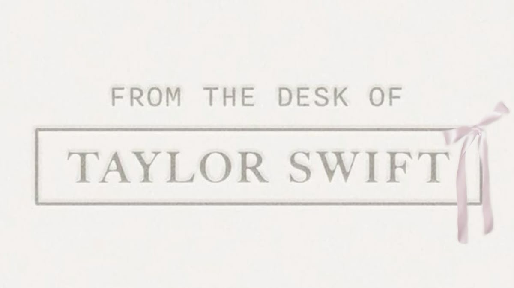

Taylor Swift Album Rankings
Navya Singh | Here’s my take on Taylor Swift’s top 6 albums, ranked after years of listening (pretty accurate, in my opinion).
- 1989
Swift’s leap into pop perfection, 1989 captures the essence of carefree joy with polished production and heartfelt lyrics. From "Blank Space" to "Style," this album defines her journey as a pop artist with memorable beats and iconic visuals, making it an undisputed top spot. - Red
Known for its passionate heartbreak songs, Red masterfully combines country and pop with emotional storytelling. Songs like "All Too Well" capture the rawness of love and loss, making it resonate deeply with fans and earning its legendary status. - folklore
A shift to indie-folk, folklore offers intricate lyrics and atmospheric vibes. Exploring themes of isolation, nostalgia, and escapism, this album feels like an intimate collection of stories that showcase Swift’s lyrical depth and versatility. - evermore
A sister album to folklore, evermore dives into fictional storytelling with poetic finesse. Tracks like "willow" and "champagne problems" bring a cozy, autumnal warmth to Swift's folk phase, making it a refreshing, creative endeavor. - reputation
Bold and edgy, reputation is Swift’s response to media controversies, exploring darker sounds and themes of self-empowerment. It’s a bold statement, and tracks like "Look What You Made Me Do" add a thrilling, vengeful energy. - Midnights
A journey through late-night thoughts and introspections, Midnights explores themes of anxiety and self-discovery. With its synth-pop vibe, it feels like Swift’s musical diary, adding a new dimension to her evolving sound.
Taylor Swift Album Sales Comparison
| Album | Release Year | Total Sales (Millions) |
|---|---|---|
| 1989 | 2014 | 10.6 |
| Red | 2012 | 7.2 |
| Folklore | 2020 | 2.9 |